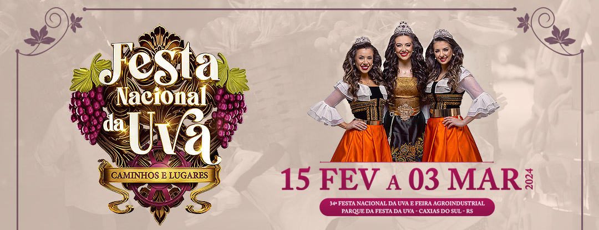
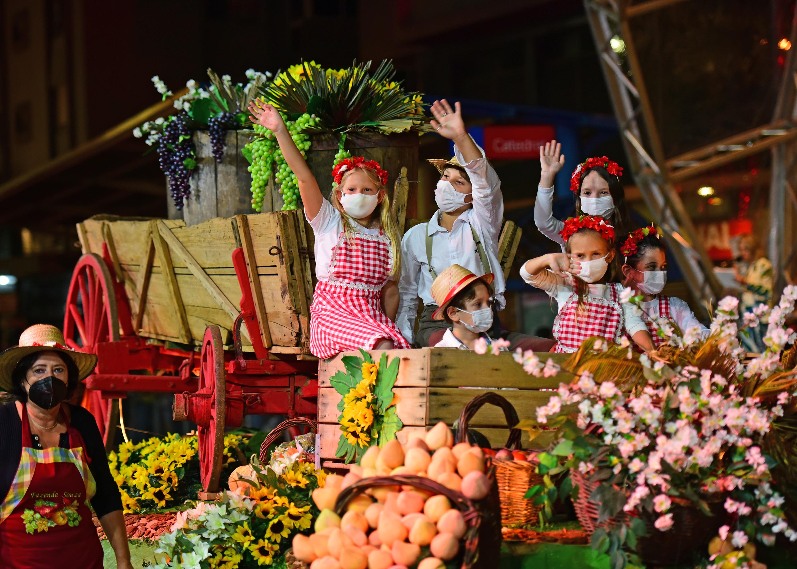

Eventos em Caxias do Sul
Caxias do Sul é palco de diversos eventos culturais, religiosos, gastronômicos e esportivos ao longo do ano. Conheça alguns dos mais famosos:

Festa das Colheitas
Comemoração da colheita com ótima gastronomia e cultura italiana.

Festa da Uva
Evento símbolo da cidade com desfiles, shows e gastronomia.

Desfile Cênico Musical
Parada cheia de figurantes e carros alegóricos pelas ruas do centro.

Público e Diversão
Multidões participando da festa, com shows e estrutura completa.